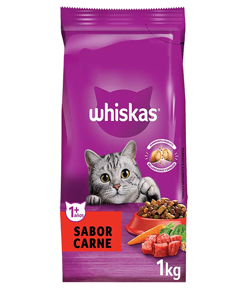
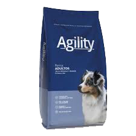
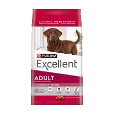
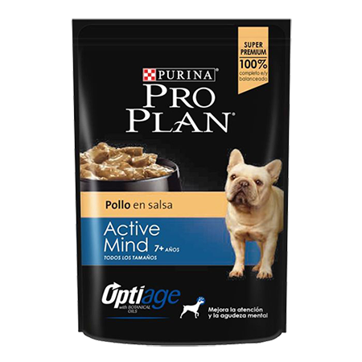

Balanceados
Nutrición completa: Aportan las proporciones correctas de proteínas, grasas, carbohidratos, vitaminas y minerales que el perro necesita en cada etapa de su vida
Practicidad y ahorro de tiempo: No requiere preparación ni cocina; se sirve directamente de la bolsa al plato sin ensuciar
Conservación y seguridad: Son fáciles de almacenar, tienen una larga vida útil y menor riesgo de contaminación bacteriana si se comparan con la comida casera mal conservada

whiskas
Nueva receta, cuidadosamente preparada para satisfacer las necesidades nutricionales de su gatoAlimento para gatos 100% completo y balanceado Fibras múltiples apoyan el funcionamiento gastrointestinal.

agility
Agility+ es nutrición de vanguardia ya que fusiona la excelencia de su proteína diferencial como el cordero, con dos funciones únicas y potentes en un solo producto.

excellent
Elaborado para reducir el pH urinario, disminuyendo la probabilidad de formación de cálculos renales y ayudando a mantener la salud de su sistema urinario.

proplan
Purina Pro Plan es considerado un alimento de gama alta o premium con excelente respaldo científico. Es altamente recomendado por veterinarios gracias a sus fórmulas.

Cardozo Liz Carolina